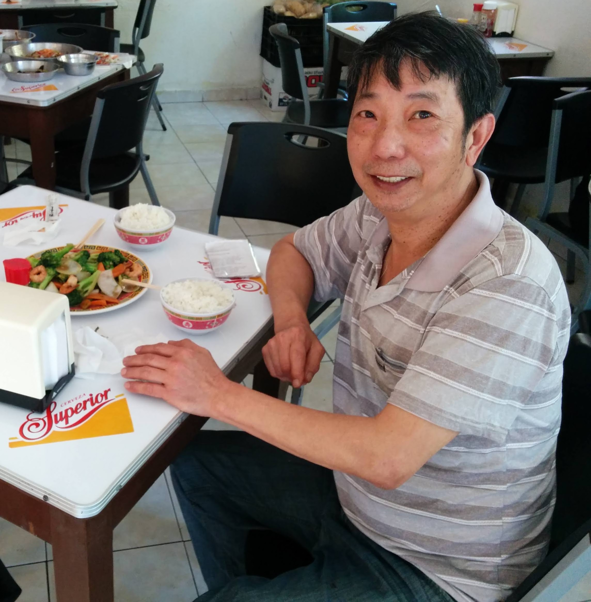
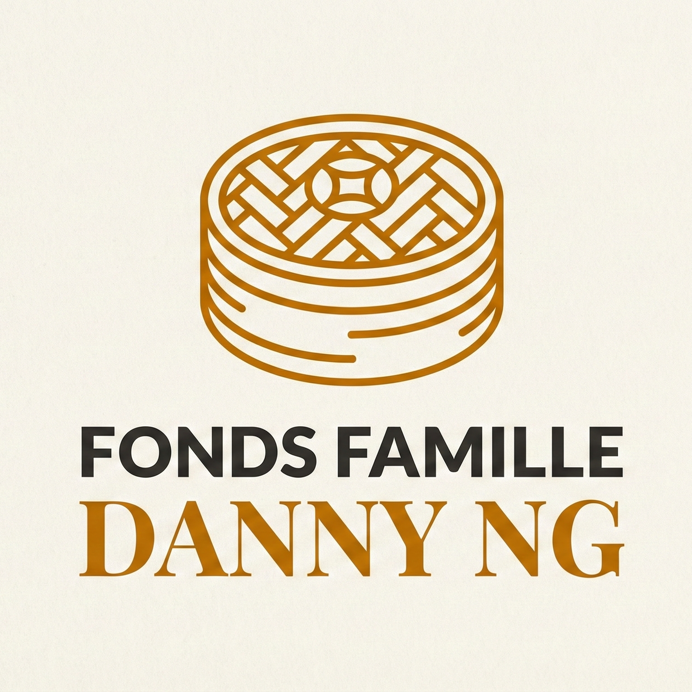

From one man's passion to a sustainable mission for Montreal.
This site is dedicated to the memory of Danny (Wing Chai) Ng and the continuation of his work. Beyond his biography and his love for restaurants, today we are transforming this heritage into concrete action for food security in the Villeray-Saint-Michel-Parc-Extension borough and across Montreal.

Danny Ng, the joy of sharing a good meal
The story of Resto Danny begins long before today. It started in 1975, in the kitchen of a restaurant in Rouyn-Noranda, with the meeting of Wing Chai "Danny" Ng (born February 2, 1950, in Hong Kong) and Lorraine Adam.
Immigrated to Canada with a passion for cooking, Danny devoted his life to the restaurant business, notably as the owner of Park Lane, a popular Sino-Quebecois restaurant in Montreal (on Park Avenue then Rosemont Boulevard). His passion wasn't so much haute cuisine but the simple and essential pleasure of eating well and feeding the people around him well.
Following his passing on November 6, 2025, his son Ricky wishes to transform this family heritage into a sustainable resource for the community. Resto Danny was born from this desire: to offer Saint-Michel what Danny offered all his life — hot, comforting, and accessible food.

Created in partnership with the Foundation of Greater Montréal (FGM), this philanthropic fund perpetuates Danny's vision of generosity.
To perpetuate Danny Ng's legacy by propelling food security innovation in Montreal. Rooted in the family's experience in the Villeray and Rosemont neighborhoods, the fund is committed to supporting sustainable community solutions to provide healthy, dignified, and affordable food to Montreal residents.
The fund is managed in perpetuity by The Foundation of Greater Montréal. The income generated helps subsidize local initiatives fighting hunger and social isolation.
"Resto Danny" is the physical embodiment of this mission. More than just a tribute, it is a community cafeteria project located in the Villeray-Saint-Michel-Parc-Extension borough.
Providing nutritious meals at a low or variable price for neighborhood residents.
Creating a warm meeting space, breaking isolation, faithful to Danny's hospitable spirit.
A place by and for the Villeray-Saint-Michel-Parc-Extension community.
To ensure the sustainability and quality of operations, the Resto Danny project aims for an operational partnership with Cantine pour tous.
Cantine pour tous is a collective that unites social and solidarity economy organizations sharing a desire to act together to help solve food insecurity and other food-related issues in their territories. This prospective partnership would allow Resto Danny to benefit from a solid structure while training the next generation in the kitchen.
Your support helps grow the Danny Ng Family Fund and bring the Resto Danny project to life.
"He didn't just have a passion for cooking, he had a passion for feeding the people around him well."